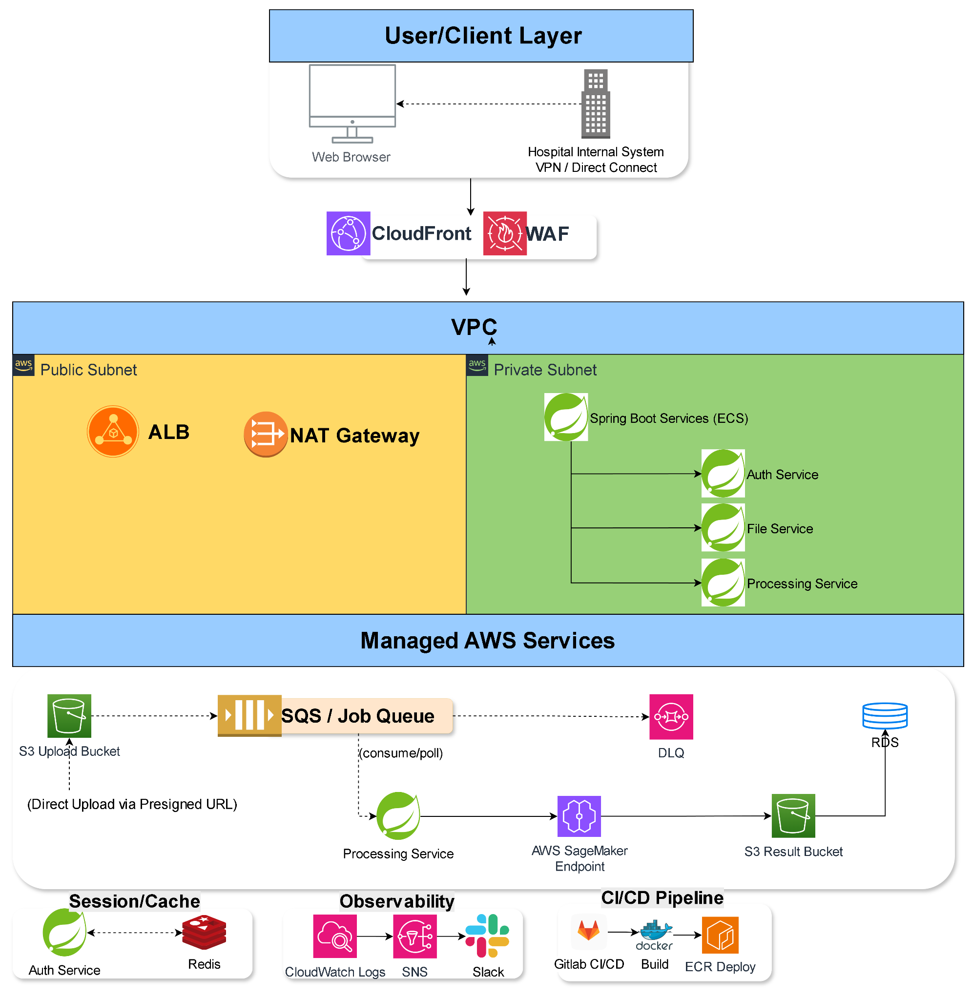
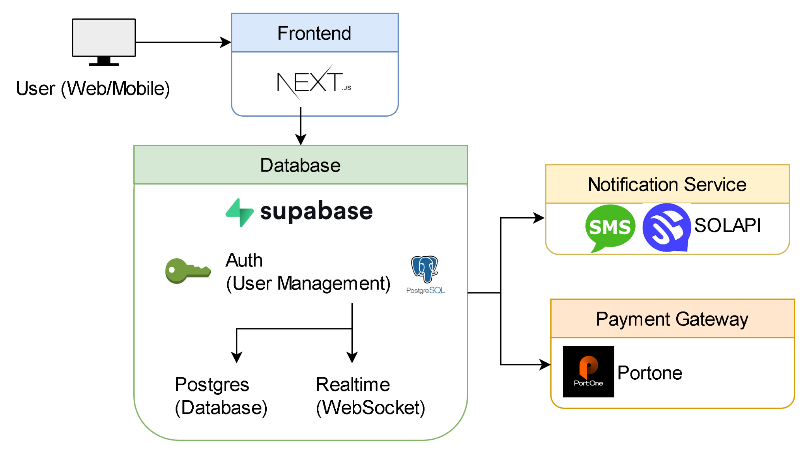
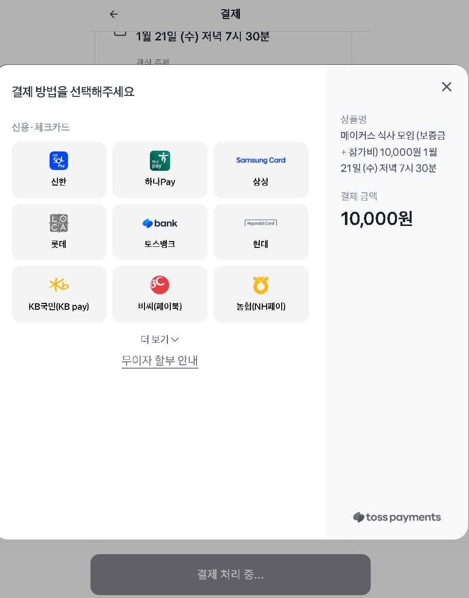
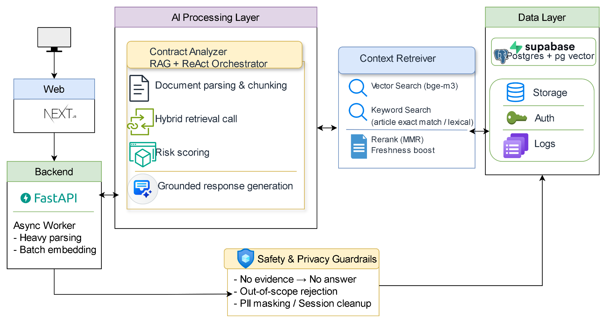
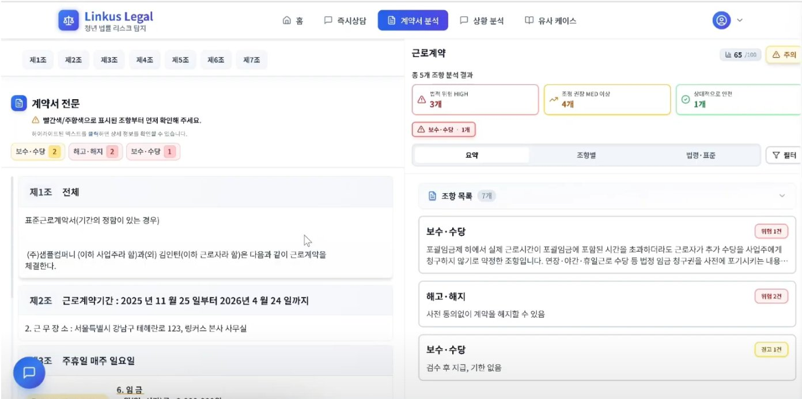
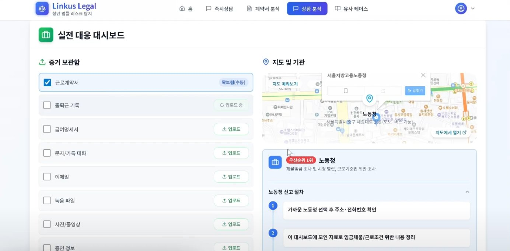
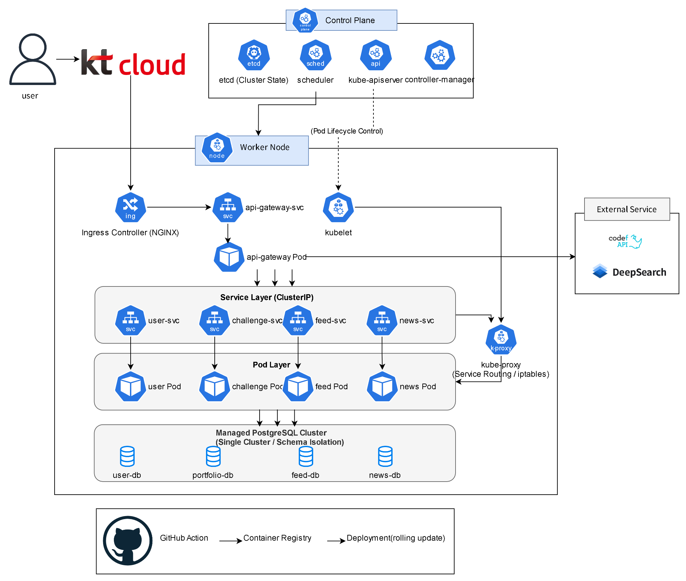
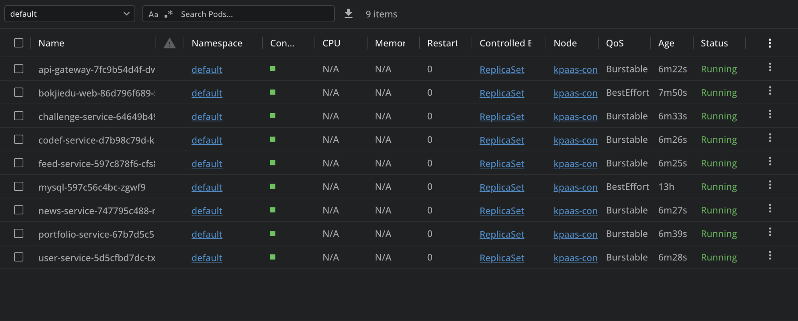
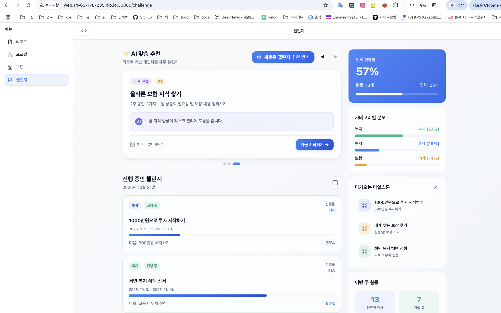

AI System Engineering
RAG 파이프라인 설계, ReAct Agent 오케스트레이션, LLM 평가 체계 구축
Backend & DevOps Engineer
백엔드 개발로 커리어를 시작해 의료·AI 스타트업에서 실서비스 운영, 클라우드 인프라 설계, LLM 평가 체계 구축, RAG 시스템 엔지니어링을 경험했습니다. 현재는 Kubernetes, CI/CD, 인프라 자동화 역량을 바탕으로 AI 솔루션과 클라우드 인프라를 연결하는 엔지니어로 성장하고 있습니다.
Executive Summary
의료 영상 SaaS, 관심사 기반 매칭 플랫폼, 법률 RAG 에이전트, 프리랜서 매칭 플랫폼 등 다양한 도메인에서 실서비스 설계, 운영, 자동화, 안정성 개선을 경험했습니다.
문제를 기능 단위가 아니라 운영 리스크와 확장성 관점에서 정의하고, 병목 분석, 아키텍처 개선, 배포 자동화, 관측성 강화까지 연결하는 방식으로 일해 왔습니다.
Engineering Strengths
RAG 파이프라인 설계, ReAct Agent 오케스트레이션, LLM 평가 체계 구축
실사용 환경의 병목, 장애, 운영 리스크를 데이터 기반으로 개선
AWS, Docker, Kubernetes, CI/CD를 통한 안정적인 배포와 롤백 체계 구성
대용량 업로드, 비동기 처리, 이벤트 기반 구조, 결제 무결성 설계
Core Skills
Core 6
 Python
Python Java
Java AWS
AWS Docker
Docker Kubernetes
Kubernetes FastAPI
FastAPIMain
Working
Familiar
Selected Work
01
의료 영상 비식별화 SaaS의 대용량 업로드 병목, 수동 배포 리스크, 장애 대응 지연 문제를 개선했습니다.
Java
 Spring
AWS
Docker
Spring
AWS
Docker
 GitLab CI
GitLab CI
Java · Spring Cloud · AWS · Docker · GitLab CI/CD · ELK

02
관심사 기반 매칭과 실결제를 제공하는 플랫폼에서 점수 기반 매칭 로직과 운영 안정화를 담당했습니다.
 Next.js
Next.js
 Supabase
Supabase
 PostgreSQL
PostgreSQL
Next.js · Supabase · PostgreSQL · PortOne · Vercel


03
공공 계약서와 법적 문서를 수집·색인화해 계약서 위험 요소를 분석하는 RAG 기반 AI 에이전트 시스템입니다.
Python
FastAPI
 LangChain
Supabase
LangChain
Supabase
 Redis
Redis
Python · FastAPI · Next.js · LangChain · GPT-4 · Redis



04
Kubernetes 기반 AI 종합 재무 관리 플랫폼으로 고부하 환경 처리와 무중단 배포를 목표로 설계했습니다.
Kubernetes
 Actions
Actions
 Prometheus
Prometheus
 Grafana
Spring
Grafana
Spring
Kubernetes · Spring WebFlux · GitHub Actions · Prometheus · Grafana



05
프리랜서와 클라이언트를 연결하는 견적 플랫폼을 2인 팀으로 End-to-End 설계·구현했습니다.
Next.js
 TypeScript
FastAPI
Supabase
TypeScript
FastAPI
Supabase
Next.js · TypeScript · FastAPI · Supabase · Realtime
Experience
Data Centric LLM 신뢰성 평가 및 학습·평가 데이터 구축 프로젝트를 매니징하며 레드팀 체계와 평가 기준 설계를 주도했습니다.
네트워크, 리눅스, Kubernetes, CI/CD, DevOps 실무 중심으로 역량을 강화했습니다.
WWCS Seoul 운영진, Let'Swift 준비위원회, 주니어 개발자 팟캐스트 등 커뮤니티 활동 경험
Contact
AI, Backend, DevOps가 만나는 문제를 실무에서 풀어내는 역할에 관심이 많습니다.